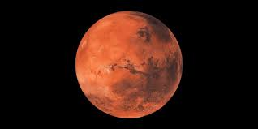
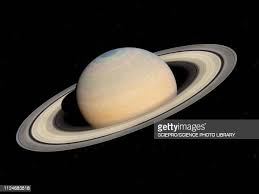

If you want to explore the universe you can also visit
 

The International Space Station (ISS) is a modular space station (habitable artificial satellite) in low Earth orbit. It is a multinational collaborative project involving five participating space agencies: NASA (United States), Roscosmos (Russia), JAXA (Japan), ESA (Europe), and CSA (Canada). The ownership and use of the space station is established by intergovernmental treaties and agreements.[9] The station serves as a microgravity and space environment research laboratory in which scientific research is conducted in astrobiology, astronomy, meteorology, physics, and other fields. The ISS is suited for testing the spacecraft systems and equipment required for possible future long-duration missions to the Moon and Mars.
The ISS programme evolved from the Space Station Freedom, an American proposal which was conceived in 1984 to construct a permanently manned Earth-orbiting station, and the contemporaneous Soviet/Russian Mir-2 proposal from 1976 with similar aims. The ISS is the ninth space station to be inhabited by crews, following the Soviet and later Russian Salyut, Almaz, and Mir stations and the American Skylab. It is the largest artificial object in space and the largest satellite in low Earth orbit, regularly visible to the naked eye from Earth's surface.It maintains an orbit with an average altitude of 400 kilometres (250 mi) by means of reboost manoeuvres using the engines of the Zvezda Service Module or visiting spacecraft. The ISS circles the Earth in roughly 93 minutes, completing 15.5 orbits per day.
The station is divided into two sections: the Russian Orbital Segment (ROS) is operated by Russia, while the United States Orbital Segment (USOS) is run by the United States as well as by the other states. The Russian segment includes six modules. The US segment includes ten modules, whose support services are distributed 76.6% for NASA, 12.8% for JAXA, 8.3% for ESA and 2.3% for CSA.
Roscosmos has endorsed the continued operation of ROS through 2024, having previously proposed using elements of the segment to construct a new Russian space station called OPSEK. The first ISS component was launched in 1998, and the first long-term residents arrived on 2 November 2000 after being launched from the Baikonur Cosmodrome on 31 October 2000. The station has since been continuously occupied for 21 years and 130 days, the longest continuous human presence in low Earth orbit, having surpassed the previous record of 9 years and 357 days held by the Mir space station. The latest major pressurised module, Nauka, was fitted in 2021, a little over ten years after the previous major addition, Leonardo in 2011. Development and assembly of the station continues, with an experimental inflatable space habitat added in 2016, and several major new Russian elements scheduled for launch starting in 2021. In January 2022, the station's operation authorization was extended to 2030, with funding secured through that year. There have been calls to privatize ISS operations after that point to pursue future Moon and Mars missions, with former NASA Administrator Jim Bridenstine stating: "given our current budget constraints, if we want to go to the moon and we want to go to Mars, we need to commercialize low Earth orbit and go on to the next step."